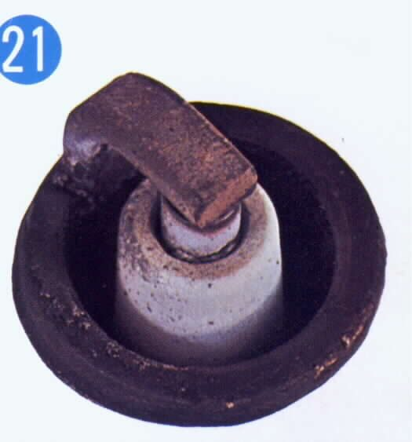

A plug does not make the engine hotter or colder. The words hot and cold describe how fast the plug tip loses heat to the cylinder head. The tip must stay hot enough to burn off deposits, and cool enough not to ignite the mixture on its own. The heat range your bike's maker names is the right starting point. This page explains when a step hotter or colder plug is worth a try and how to confirm the choice.
Safety
- Let the engine cool before you take out a plug. A hot head can burn you and strip the thread.
- A plug that runs far too hot can melt and damage the piston. Stop riding if the engine pings badly, and do not use a hotter plug as a fix for a lean engine.
You need
- The plug type and heat range in your bike's manual.
- A plug spanner, and the new plug in the range you want to try.
- A level road for the colour test.
How heat range works
- A plug with a long centre electrode and insulator tip is hotter. Heat takes longer to flow out to the head.
- A plug with a short tip is colder.
- If the tip is too cold, it cannot burn off carbon and fuel, and it fouls.
- If the tip is too hot, it can light the mixture early. This causes pinging and can burn a hole in the piston.
When to try another range
| What you see | Likely cause | Try |
|---|---|---|
| Black, dry soot | Rich mixture or plug too cold | Fix the mixture first, then a hotter plug if it persists |
| Black and wet with oil | Oil getting past rings or valve seals | Repair the oil leak, not the plug |
| White or blistered insulator | Lean mixture, timing too early or plug too hot | Fix the cause first, then a colder plug |
| Light chocolate brown | Correct | Keep the plug |
Slow riding, short trips and an ageing engine that passes more oil can call for a hotter plug. Fast riding, heavy loads and hot weather can call for a colder one.
Steps
- Read the plug now. See Read a spark plug.
- Fix any rich or lean mixture, oil leak or timing fault that shows on the plug.
- Fit a new plug in the range you want to try. Set the gap and tighten as in Remove, check, gap and fit a spark plug.
- Warm the engine. Ride on a level road at the throttle setting you want to test, for about a mile.
- Close the throttle, pull in the clutch, kill the ignition and coast to a stop.
- Take out the plug and look at the tip colour straight away.
- Light chocolate brown is right. If it is still black or white, change one step and test again. Change only one thing at a time.
Check your work
- The plug tip is light brown after the test ride.
- The engine does not ping under load.
- The engine starts and idles without fouling.
If it did not fix the problem
- Black plug: Spark plug is black and sooty.
- White plug: Spark plug is white or blistered.
- Pinging: Pinging or rattling sound when accelerating.